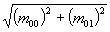

java.awt. Une attention
toute particulière devrait être apportée aux systèmes de coordonnées des
objets {@link java.awt.Graphics2D}.
| Rappel de quelques notions de AWT |
Une application fenêtrée contient une liste de composantes
formant l'interface utilisateur. Chaque type de composante (bouton, barre de
défilement, etc.) est représentée par une classe spécialisée ({@link java.awt.Button},
{@link java.awt.Scrollbar}, etc.) qui dérive obligatoirement de la classe
{@link java.awt.Component}. Quand le système a déterminé qu'il faut redessiner une
composante, il appelle automatiquement la méthode paint(...) de celle-ci.
Aux méthodes paint(...) de chacune des composantes, le système transmet
un même objet {@link java.awt.Graphics2D} temporaire qu'il aura préalablement créé
et configuré comme suit:
| Origine (0,0) des axes: | Coin supérieur gauche de l'écran ou du papier d'imprimante. |
| Direction des axes: | Les x croissent vers la droite et les y vers le bas. |
| Unités des axes: | Les pixels (sorties à l'écran) ou environ 1/72 de pouce (sorties à l'imprimante). |
| Épaisseur des lignes: | Un pixel (sorties à l'écran) ou environ 1/72 de pouce (sorties à l'imprimante). |
Cette configuration convient très bien à l'écriture de texte.
Ainsi, un texte de 12 unités de haut aura une hauteur de 12 pixels à l'écran
ou de 1/6 de pouces à l'impression. Les méthodes paint(...)
peuvent changer temporairement la configuration de {@link java.awt.Graphics2D}
lors d'un traçage, mais doivent le remettre dans son état initial (tableau 1)
lorsqu'elles se terminent.
Notions de org.geotools.renderer.j2d
calquées sur celles de AWT |
Un objet {@link org.geotools.renderer.j2d.Renderer} peut
contenir une liste de couches représentant les informations que l'on place
sur une carte. Chaque type de couche (stations, échelle de la carte, etc.)
est représenté par une classe spécialisée ({@link org.geotools.renderer.j2d.RenderedMarks},
{@link org.geotools.renderer.j2d.RenderedMapScale}, etc.) qui dérive obligatoirement
de la classe {@link org.geotools.renderer.j2d.RenderedLayer}. Quand le système
a déterminé qu'il faut redessiner une couche, il appelle automatiquement
la méthode paint(...) de celle-ci. Aux méthodes paint(...)
de chacune des couches, le système transmet un même objet {@link java.awt.Graphics2D}
temporaire qu'il aura préalablement créé et configuré comme suit:
| Origine (0,0) des axes: | Dépend de la projection cartographique en cours. Souvent en dehors de la région visible de la carte. |
| Direction des axes: | Les x croissent vers la droite et les y vers le haut, comme en géométrie. |
| Unités des axes: | Habituellement en mètres sur le terrain (et non en mètres sur l'écran!), on en degrés de longitude/latitude. |
| Épaisseur des lignes: | Dépend de la résolution de la carte. Peut être de l'ordre de 50 mètres par exemple. |
Cette configuration convient très bien au traçage de couches cartographiques. Elle permet de travailler avec les dimensions réelles des constructions sans se soucier du facteur d'échelle. Toutefois, elle ne convient pas du tout à l'écriture de texte. Par exemple, un texte de 12 unités de haut sera interprété comme ayant une hauteur de 12 mètres. Pour une carte d'échelle 1:50 000, des lettres de 12 mètres apparaîtront à l'écran comme un point de dimension infime. Le programmeur peut changer temporairement la configuration de {@link java.awt.Graphics2D} (par exemple pour écrire du texte), mais doit le remettre dans son état initial (tableau 2) lorsqu'il aura terminé.
| Rappel de quelques notions sur les transformations affines |
Pour convertir en pixels des coordonnées exprimées selon un système d'unités quelconque, Java2D utilise une transformation affine représentée par la classe {@link java.awt.geom.AffineTransform}. En gros, une transformation affine est une matrice 3×3. En plaçant dans cette matrice les bons coefficients, on peut obtenir n'importe quelles combinaisons d'échelles, translations, rotations et cisaillements. Dans notre cas particulier, nous utilisons cette matrice pour convertir en pixels des coordonnées exprimées en mètres.

La classe {@link java.awt.geom.AffineTransform} fournit un ensemble de
méthodes permettant d'appliquer des transformations sur cette matrice sans nécessairement
connaître les mathématiques sous-jacentes. Par exemple la méthode rotate(...)
modifiera les termes de la matrice 3×3 pour y ajouter l'effet d'une rotation d'un
angle quelconque. Notons au passage une identité qui se révèlent parfois pratique:
 et sont invariants sous rotations.
En l'absence de rotation ou de cisaillement, les termes m01 et m10 sont nuls. Restent alors les termes m00 et m11, qui nous indiquent l'échelle de la carte telle qu'appliquée par la transformation affine. Dans cette situation simplifiée on obtient donc les relations suivantes:
= m00 = AffineTransform.getScaleX()
= m11 = AffineTransform.getScaleY()